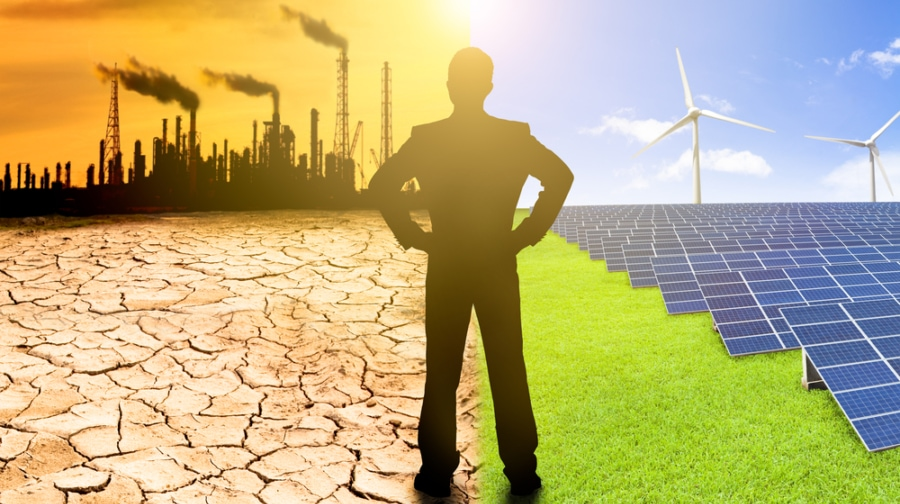

Awareness And Solution
WHY ?
Alternative energy sources are available for free of cost and do not tax the environment for their usage. Power generation through alternative sources of energy is clean and ‘green’. If we shift to use power generated from these sources, then carbon dioxide emission from the conventional energy sources will be greatly reduced, and the problem of global warming will be solved in a few years.
- Renewables Are Growing Faster than Fossil Fuels
- Renewables Can Cost Less than Fossil Fuels
- Renewable Energy is Cleaner than Fossil Fuels
- Renewable energy provides reliable power supplies and fuel diversification , which enhance energy security, lower risk of fuel spills, and reduce the need for imported fuels.
HOW ?
Well there are several ways to achieve this phase shift!
- Rooftop Solar Panels
Depending on your latitude and the orientation of the panels, you could generate 10 or more watts per square foot. A typical house consumes at least a kilowatt of power, so a few square feet of solar panels should be enough to power most or all of your needs.
- Wind Turbines
If you own an estate ,then you can opt for this one! Wind power is more stable than solar, and a good-sized wind turbine can easily generate most or all of your electricity needs. Depending on your area, wind might be a better renewable investment than solar.
- Solar Ovens
Perhaps you're not ready to power your entire home with renewable energy. That's a big project, and maybe it's just not feasible for all sorts of reasons. You can still power a part of your home with renewable energy by building a solar oven.Using one solar oven is equivalent to reducing 4 gas cylinders per annum!
- Solar Water Heaters
Solar water heaters use the sun to heat a reserve of water, which can then be pumped through your radiators or out your faucets or showerheads. This system is much cheaper than using gas or electricity to heat your water, and is easier to install than solar panels.
Energy conservation is the foundation of Energy Independence ~ Tom Allen